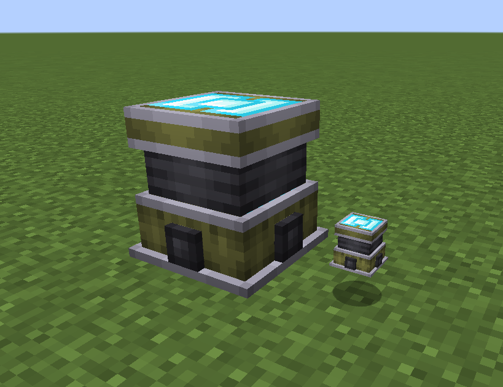

Energy Siphon¶
This block extracts Forge Energy from nearby mobs. Electric pokémobs are producers and storages of Forge Energy, so this block can use them as a source of energy.
The amount of power produced by an electric pokémobs depends on the level, and offensive stats of that pokémob. The specific amount produced can be edited via the powerFunction config option in pokecube_adventures-common.toml. The maximum power that the energy siphon can extract, is then configured via maxOutput in the same file.
Using the Siphon¶
The energy siphon will siphon from mobs within a radius of about 10 blocks. The update rate for new mobs is somewhat slow, so it may take a little while before it notices valid targets. Once it finds some, it will try to forward the energy from the target into linked blocks. The power produced depends on the distance to the mob, mobs closer to the siphon will produce much more power than mobs further away.
The energy siphon can be linked to any blocks that will accept Forge Energy, this includes a large number of power consuming blocks from tech mods, etc.
Pokémobs will get hungry as their energy is siphoned out, so you might need to consider how to keep them fed!
Linking to other blocks¶
There are 2 ways to link the energy siphon:
Place it directly adjacent to the block which needs to recieve energy.
Using the Location Linker, once the linker has a destination, simply right click the siphon with the linker to apply the link. To un-link the location, sneak and right click the siphon with the linker.
Wireless linking of energy siphons can be disabled via wirelessSiphons in pokecube_adventures-common.toml.